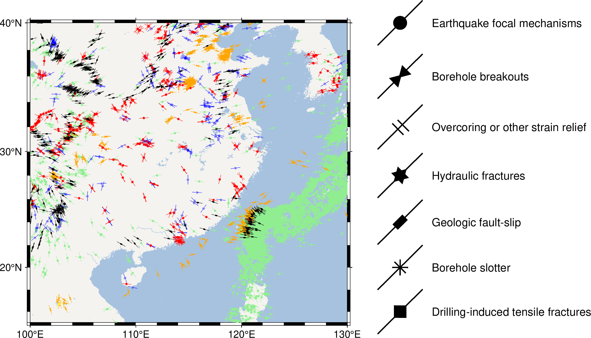

WSM_2025: 全球地应力数据
World Stress Map Database Release 2025 是一个全球地应力数据库，提供 csv、xlsx 格式数据的下载。
数据简介
WSM_2025 数据集包含了地壳的100842条数据记录，提供了两个数据文件：
WSM_Database_2025.csv: 以逗号分割的文本格式WSM_Database_2025.xlsx: Excel格式数据
更详细的数据说明请阅读数据格式说明 PDF 文件。
使用示例
数据包含了观测点经纬度、深度、破裂类型等信息。不同列所代表的含义请阅读数据格式说明 PDF 文档。 但原始数据文件包含引号包裹的逗号，例如 "Tanzania, United Republic of"，处理分隔符时不能简单地使用逗号。 并且数据中包含非 ASCII 字符，有些数据的经纬度等信息缺失。 用户在使用数据时，需要特别注意这些情况，必要时删除不用的数据列简化数据处理过程。 在以下的例子里，使用的不是原始数据，而是手动筛选之后的数据，只保留经纬度、方位角、类型四列：
#!/usr/bin/env bash
# 官方网站
# https://www.world-stress-map.org/
# 下载数据文件
# https://datapub.gfz.de/download/10.5880.WSM.2025.001-Scbwez/
# 格式说明
# https://doi.org/10.48440/wsm.2025.001
# https://doi.org/10.5880/WSM.2025.001
gmt begin WSM
# 绘制底图
gmt set MAP_GRID_PEN_PRIMARY 0.25p,gray,2_2
gmt coast -JM10c -R100/130/15/40 -G244/243/239 -S167/194/223 -Baf
#
size=0.3c
data=$(gmt which WSM_example.txt)
# 生成震源机制符号自定义文件
cat > focal_mec.def << 'EOF'
N: 1 a
$1 O
0 0 1 y
0 0 0.2 c
EOF
# 生成钻孔崩落符号自定义文件
cat > borehole_collapse.def << 'EOF'
N: 1 a
$1 O
0 0 1 y
0 -0.0866 0.2 t
0 0.0866 0.2 i
EOF
# 生成应力解除符号自定义文件
cat > stress_relief.def << 'EOF'
N: 1 a
$1 O
0 0 1 y
0 -0.05 0.25 -
0.02 0.05 0.25 -
EOF
# 生成水压致裂符号自定义文件
cat > hydra_fract.def << 'EOF'
N: 1 a
$1 O
0 0 1 y
0 0 0.25 t
0 0 0.25 i
EOF
# 生成断层滑动符号自定义文件
cat > fault_slip.def << 'EOF'
N: 1 a
$1 O
0 0 1 y
0 0 0.1 0.2 r
EOF
# 生成钻孔槽(BS)符号自定义文件
cat > BS.def << 'EOF'
N: 1 a
$1 O
0 0 1 y
0 0 0.25 x
0 0 0.25 -
EOF
# 生成钻孔诱发张裂隙(DIF)符号自定义文件
cat > DIF.def << 'EOF'
N: 1 a
$1 O
0 0 1 y
0 0 0.25 d
EOF
# 使用 gawk 命令提取该类型的测点数据并绘制
gawk '($4 == "FMF" || $4 == "FMS" || $4 == "FMA") {print $1, $2, $3}' $data | gmt plot -Skfocal_mec/$size -W0p,lightgreen -Glightgreen
gawk '$4 == "BO" {print $1, $2, $3}' $data | gmt plot -Skborehole_collapse/$size -W0p,orange -Gorange
gawk '$4 == "OC" {print $1, $2, $3}' $data | gmt plot -Skstress_relief/$size -W0p,blue
gawk '($4 == "HF" || $4 == "HFH" || $4 == "HFP" || $4 == "HFS") {print $1, $2, $3}' $data | gmt plot -Skhydra_fract/$size -W0p,red -Gred
gawk '($4 == "GFI" || $4 == "GFM") {print $1, $2, $3}' $data | gmt plot -Skfault_slip/$size -W0p,black -Gblack
gawk '$4 == "BS" {print $1, $2, $3}' $data | gmt plot -SkBS/$size -W0p,pink -Gpink
gawk '$4 == "DIF" {print $1, $2, $3}' $data | gmt plot -SkDIF/$size -W0p,yellow -Gyellow
# 符号图例
echo 135 40 45 | gmt plot -Skfocal_mec/2c -W1p -Gblack -N
echo 135 36 45 | gmt plot -Skborehole_collapse/2c -W1p -Gblack -N
echo 135 32 45 | gmt plot -Skstress_relief/2c -W1p -Gblack -N
echo 135 28 45 | gmt plot -Skhydra_fract/2c -W1p -Gblack -N
echo 135 24 45 | gmt plot -Skfault_slip/2c -W1p -Gblack -N
echo 135 20 45 | gmt plot -SkBS/2c -W1p -Gblack -N
echo 135 16 45 | gmt plot -SkDIF/2c -W1p -Gblack -N
gmt text -F+f10p+jML -N << 'EOF'
138 40 Earthquake focal mechanisms
138 36 Borehole breakouts
138 32 Overcoring or other strain relief
138 28 Hydraulic fractures
138 24 Geologic fault-slip
138 20 Borehole slotter
138 16 Drilling-induced tensile fractures
EOF
gmt end show
{kind=link}

请注意，示例中没有绘制 geologic-volcanic vent alignment 和 anisotropy of seismic waves 两种类型的数据。
引用信息
Heidbach, Oliver; Rajabi, Mojtaba; Di Giacomo, Domenico; Harris, James; Lammers, Steffi; Morawietz, Sophia; Pierdominici, Simona; Reiter, Karsten; von Specht, Sebastian; Storchak, Dmitry; Ziegler, Moritz O. (2025): World Stress Map Database Release 2025. GFZ Data Services. https://doi.org/10.5880/WSM.2025.001